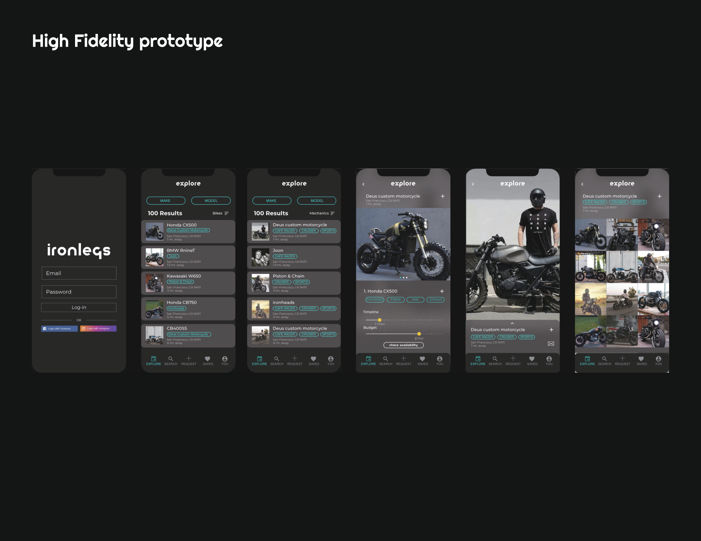
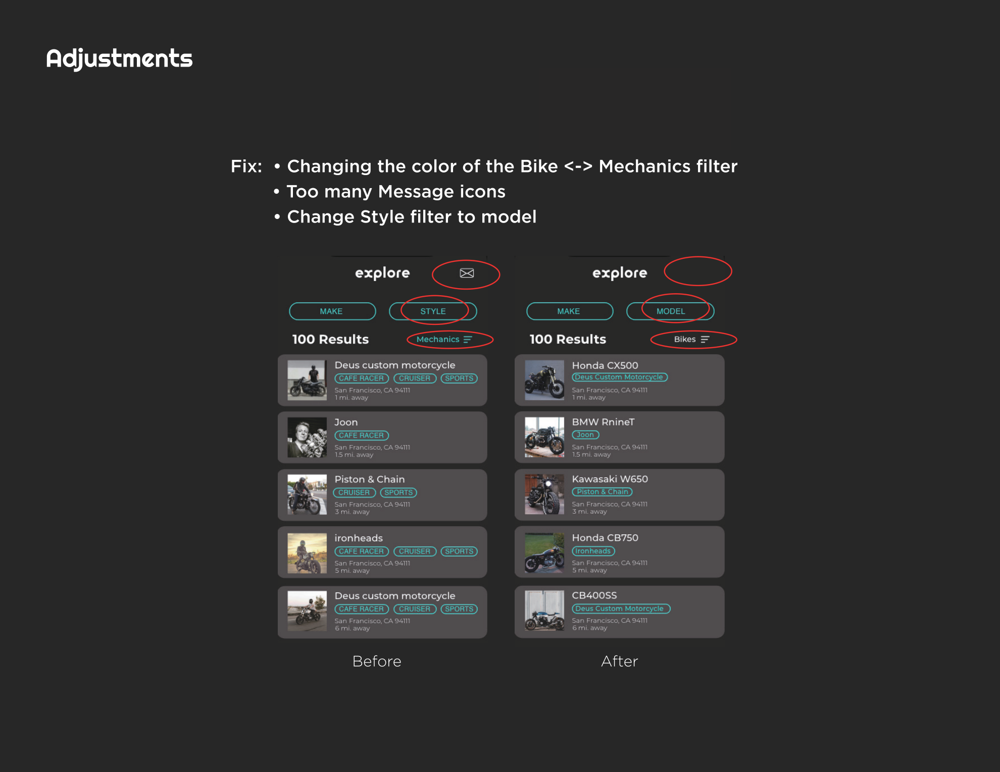
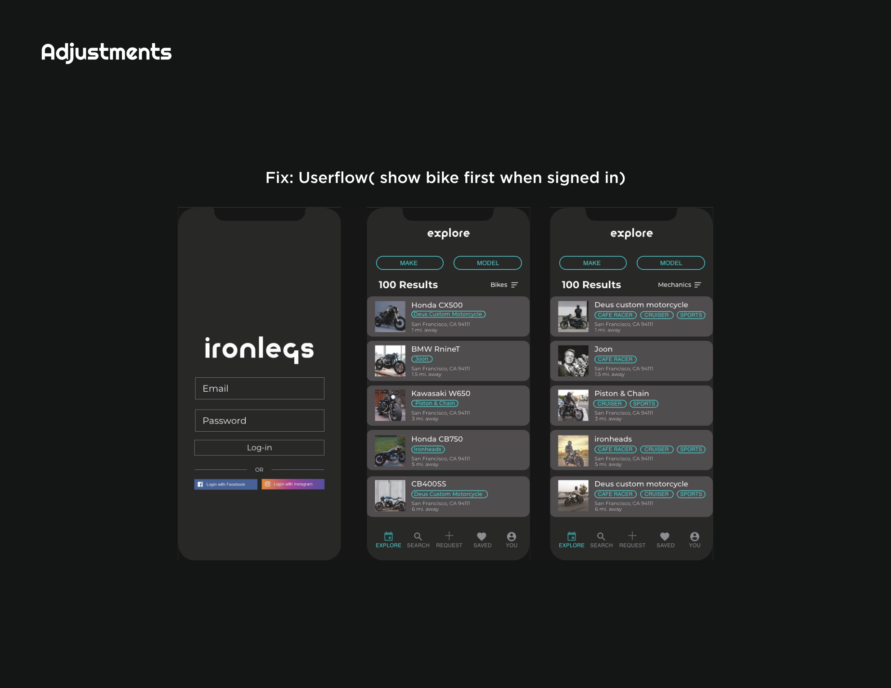
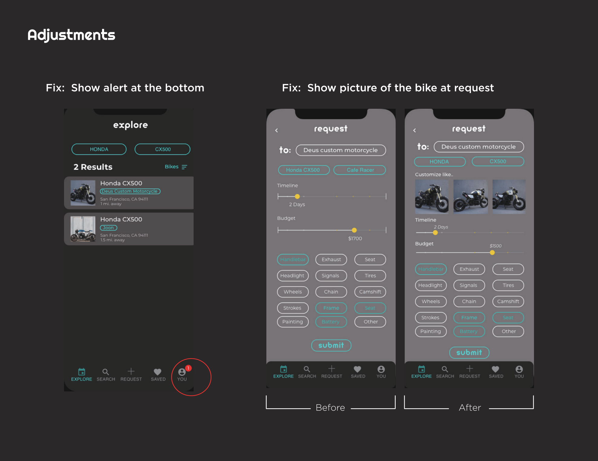
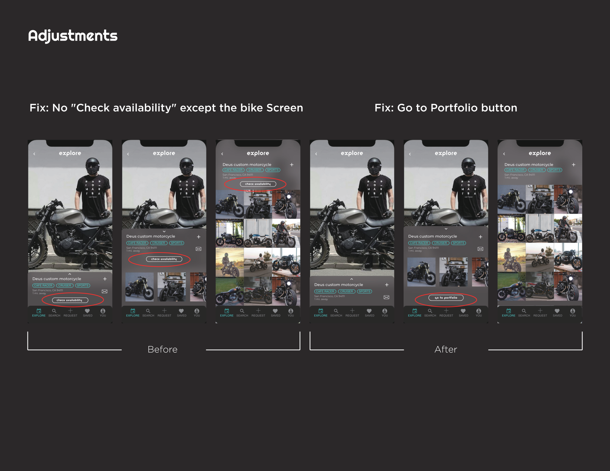
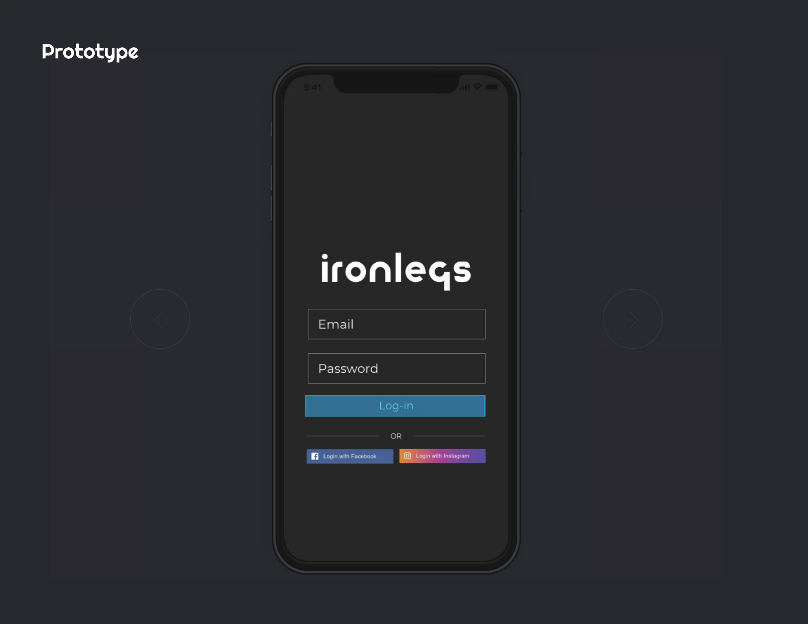

Overview
THE PROBLEM
Owning and riding a motorcycle is built on brotherhood and sisterhood — but customizing one is a different story.
More human hands go into building a motorcycle than a car, and riders who want to customize face a fragmented, opaque market.
Finding the right mechanic, understanding pricing, and booking service all require effort that kills the momentum.
Problem
Riders lack tools to manage motorcycle customizing. Finding skilled mechanics with transparent pricing and availability is time-consuming and unreliable.
Assumption
A platform that matches owners with mechanics — with clear guides on builds, costs, and timelines — would remove the biggest friction points in the process.
Success
People actively sharing their builds, helping each other, and local motorcycle businesses joining the network to provide better solutions at a cheaper price.
Research
SURVEY + INTERVIEWS
I ran a 36-person survey and conducted in-person interviews with motorcycle riders and mechanics across San Francisco.
The data made the pain points undeniable.
95%
of surveyed riders are interested in customizing their bike — but most lack the tools, skills, or connections to do it.
80%
prefer to do it themselves — but fear of something going wrong while DIY-ing a daily commute bike is a major blocker.
#1
pain point: Time. Finding the right parts, coordinating with mechanics, and the actual service all eat hours riders don't have.
↑
Price opacity is a top frustration — vague quotes that vary shop-to-shop make riders hesitant to commit to any customization.
User Interviews
VOICES FROM THE ROAD
"Something you can't open it, you don't own it."
Andrew Black — Experienced Mechanic
"I just cannot stop customizing bike. It's my passion."
Carson Dominic — Dedicated Rider
Personas
WHO WE'RE DESIGNING FOR
Three distinct users emerged from research — each with a different relationship to motorcycle culture and different pain points with the current system.
John, 33
Mechanic
Motivations
Find unique motorcycles to customize and share with his network. Loves opening bikes and helping newbies.
Pain Points
Lacks opportunities to find the bikes he wants to work on. Can't easily connect with riders who need his skills.
Tommy, 28
Assistant Manager
Motivations
Customize his bike his way. Get maintenance at a fair price. Uses his bike as a daily commute.
Pain Points
Afraid something goes wrong when DIY-ing his only commute vehicle. Maintenance services are expensive and opaque.
Alex, 24
College Student
Motivations
Learn how to fix and customize his own bike. Social riding — going out and chatting with riding pals.
Pain Points
No tools, no garage, very limited budget. Has ridden since 18 but never touched his bike mechanically.
Userflow
THREE CORE FLOWS
The app was designed around three primary tasks that surfaced from the research — each representing a distinct need in the motorcycle ownership journey.
01
Request Customizing
Home → Sign in/up → Browse Bikes/Mechanics → Check Availability → Submit Request. The primary conversion flow — fast and frictionless.
02
Check Request Status
Current Screen → You → My Requests. Riders need constant visibility on where their bike is in the process.
03
Browse Mechanic Portfolio
Explore → Bikes/Mechanics toggle → Mechanic profile → Portfolio. Trust is built before booking — riders want to see the work.
Process
FROM CRAZY 8S TO HIGH FIDELITY
The design went through rapid ideation (Crazy 8s), digital wireframes, high-fidelity prototypes, and user testing before reaching the final iteration.
01
Crazy 8s
Rapid sketching — 8 screens in 8 minutes. Explored login, explore, mechanic profile, and request flows before committing to any direction.
02
Wireframe
Digital wireframes mapped the information architecture: login, explore bikes/mechanics, bike detail with availability, and the request form.
03
Hi-Fi Prototype
Dark UI with teal accents. Explore screen switches between Bikes and Mechanics views. Budget slider, timeline input, and parts checklist on the request screen.
04
User Testing
Three participants tested three tasks. Findings drove four concrete UI adjustments before the final prototype.
User Testing
TESTED WITH REAL RIDERS
Three participants — a Harley Davidson rider, a Vespa rider, and a prospective buyer — completed three standardized tasks to surface usability issues.
Deok-gil Woo
Harley Davidson rider
Completed in 1 minute — Explore → Deus → choose bike → check availability → submit
You → My Request — 10 seconds
Request → choose bike → submit — 30 sec
Chae hyun hong
Vespa rider
2 minutes — Request → Deusmoto → Check Availability
Struggled — Mechanics filter hard to see
Request → CX500 → Check Availability — 30 sec
Choi
Wants a motorcycle
Completed the flow successfully
Completed successfully
"Check Availability" label was confusing on portfolio screen
Prototype
HIGH FIDELITY SCREENS
Dark UI, teal accent system, explore/mechanics dual-view, availability checking, and a full request flow — tested with real riders.






Iterations
FOUR FIXES FROM TESTING
User testing surfaced four clear problems. Each one had a direct design solution applied before the final prototype.
Before
Bike ↔ Mechanics toggle used color to distinguish views — but the contrast was too low for users to notice the mode switch.
After
Increased color contrast on the filter toggle. Changed "Style" label to "Model" for clarity. Reduced redundant message icons in the UI.
Before
"Check Availability" button appeared on multiple screens — portfolio view and bike list — creating confusion about what action to take where.
After
"Check Availability" restricted to the bike detail screen only. Portfolio screen now shows a clear "Go to Portfolio" CTA instead.
Before
Request form had no visual reference — users couldn't confirm they were requesting the right style of customization.
After
Added a "Customize like..." photo section to the request form so riders can show the mechanic exactly what they want.
Before
After sign-in, the app defaulted to the Mechanics explore view — which wasn't the primary use case for most riders.
After
Post-login now shows Bikes explore view by default. Users can still switch to Mechanics — but the primary intent is served first.
Outcome
WHAT IT BECAME
ironleg became a community-first marketplace for motorcycle culture. Not just a booking app — a network where riders share builds, compare mechanics, and help each other get better work done at a fairer price.
The final prototype demonstrated that transparency around pricing, timing, and mechanic portfolios is the unlock that makes riders commit to customization they've been putting off for years.